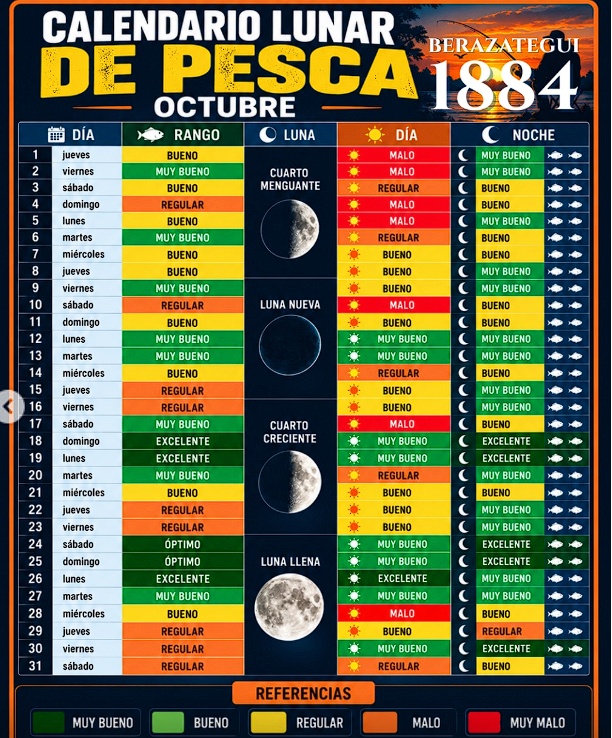

Pesca Tienda
TU BITÁCORA
Capturas
RITMOS DEL AGUA
Mareas / Luna

Mareas de La Plata
Horarios automáticos de pleamar y bajamar.
Mis tablas por punto
Agregá observaciones propias para tus lugares.
Tablas guardadas
EQUIPATE
Tiendas
⌕
EXPLORÁ CERCA TUYO